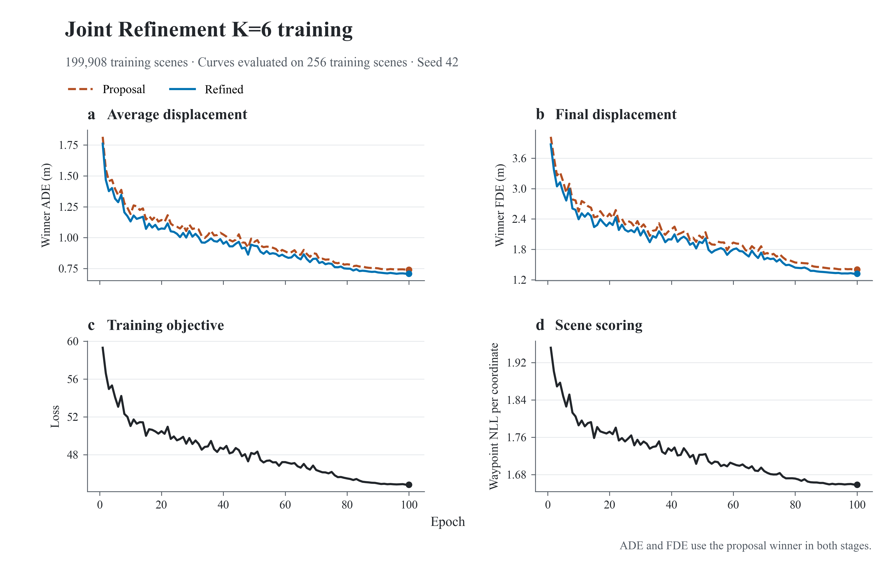

Argoverse 2 / Joint forecasting / Future refinement
AV2 多智能体运动预测
从历史轨迹与矢量地图出发，同时预测多个交通参与者未来 6 秒的运动，生成六组联合未来与整场概率。
- 研究问题
- 怎样让多个主体的未来在同一候选中相互协调，并选出更合理的联合预测？
- 我的做法
- 实现联合提案、未来交互细化和独立场景评分，串联训练、预测、评测与动态可视化。
- 实验效果
- 全量细化模型在 22,940 个 holdout 场景上，Best-of-6 FDE 为 1.817 m。
一段历史，六组联合未来
每个面板是一组完整的多主体未来。颜色对应同一目标，面板按场景概率排序，共用时间轴与地图视野。
路口分歧 · 候选呈现不同转向
看最高概率的两个候选：橙色车辆在左上面板向上行驶，在中上面板转向左侧；下排部分候选中，蓝色车辆也出现转向。
稳定行进 · 候选集中在相近路径
多主体行进 · 观测如何衔接预测
- 历史段显示实测运动，0 秒后进入模型预测。
- 车身沿预测路径推进，路点表示未来 2、4、6 秒的位置。
全量细化模型 · 第 80 轮 · val_holdout 场景。结合实测周车运动展示预测主体的联合未来。
联合提案、未来细化与整场评分

- 编码完整场景。 GRU 编码 50 帧运动历史，折线编码器处理车道与人行横道；相对注意力融合主体和地图信息。
- 生成六组提案。 共享循环解码器按 0–2、2–4、4–6 秒分段生成整场轨迹，让同世界目标在提案阶段交换信息。
- 细化未来关系。 在已预测的路径上查询邻近主体与地图，通过时段、主体及地图注意力生成速度残差，再积分修正轨迹。
- 对整场未来评分。 独立评分器重新编码细化轨迹与关系，输出六组候选的归一化概率。
联合训练目标
用几何损失优化联合轨迹，用混合似然学习场景概率。Pₖ 与 Rₖ 分别表示第 k 组提案和细化轨迹，Y 为多主体未来真值。
轨迹监督
从六组提案中选出同一个联合未来
以 ADE＋FDE 选择场景级候选 k*，兼顾整段路径和 6 秒终点。全部目标共享这个候选编号。
提案与细化沿同一候选学习
用相同的 k* 同时监督 P 和 R，使初步生成与后续修正保持一致。
场景评分
同时考虑概率和真值拟合
评分器输出六组概率 π。Eₖ 衡量候选对未来 2、4、6 秒路点的拟合，采用尺度为 2 m 的 Laplace 分布。
对六组联合未来计算混合似然
通过概率加权的似然学习整场排序；评分输入停止梯度，让轨迹学习和概率学习各自承担明确目标。
几何损失与评分损失共同训练
两项等权相加，分别对有监督的场景取平均。
责任度与评分梯度
让更贴近真值的候选获得更高评分
rₖ 表示结合当前概率和真值拟合后的候选责任度。当 rₖ > πₖ 时，梯度下降提高 zₖ；反之降低。
路点似然与有效掩码
- Ω 包含有效目标在 2、4、6 秒的有效坐标，c ∈ {x, y}；log 4 来自 Laplace 分布的归一化项。
- ADE 先对每个目标的有效帧取平均，再对目标取平均；FDE 对第 60 帧有效的目标取平均。
- 评分能量使用停止梯度的细化轨迹；上式的评分梯度按单场景表示。
全量模型的预测效果
Top-1 评估最高概率候选，Best-of-6 按真值终点误差从六组联合未来中选优。两项一起衡量预测精度、候选覆盖和排序。
| 评测范围 | 场景数 | Top-1 ADE / FDE | Best-of-6 ADE / FDE | Brier-minFDE₆ |
|---|---|---|---|---|
| 全部场景 | 22,940 | 1.719 / 4.335 m | 0.895 / 1.817 m | 2.429 |
| 多主体场景 | 17,932 | 1.444 / 3.609 m | 0.834 / 1.747 m | 2.360 |

全量训练怎样改善预测
- Top-1 FDE 从 7.536 降至 4.321 m。 对比同一全量运行第 1 轮与第 80 轮的预测。
- Best-of-6 FDE 从 3.677 降至 1.859 m。 在 21 个已评测 checkpoint 中，第 80 轮的候选覆盖误差最低。

多候选覆盖与概率排序

- 前三个候选覆盖 68.2% 的最低 FDE 候选。 在同一场景中保留不同运动可能，为后续决策提供候选。
- Top-1 与 Best-of-6 平均相差 1.86 m。 同时报告最高概率预测与六候选选优结果，量化多候选输出的覆盖能力。
提案、细化与评分的训练曲线

模型、训练与评测的一体化实现
- 统一预测与评测。 匀速、回归、独立 K=6、邻居交互、场景联合与细化版本使用一致的预测接口和离线计分流程。
- 可恢复的训练。 续训恢复模型、优化器、调度器与随机状态，并验证与连续训练的数值一致性。
- 训练与推理隔离。 未来有效掩码用于监督；前向预测读取历史和地图，独立评分分支明确控制梯度路径。
- 真实场景可视化。 从落盘预测生成六候选回放、分镜、误差分析和 checkpoint 对照图。